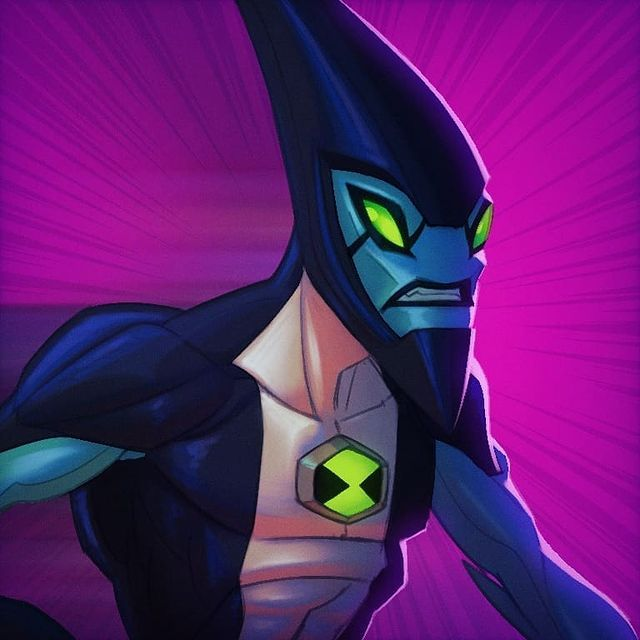

XLR8 lembra um Velociraptor semi-blindado. Alienígena esbelto, com braços finos que possuem três garras em
cada mão, e duas garras nos pés por cima de bolas pretas que as usa quando corre, além de dar suporte as
suas longas pernas. Ele usa um elmo com uma viseira azulada, deixando as outras características de sua
cabeça desconhecidas. Sempre que seu visor não é usado, pode-se ver seu rosto que é azul com olhos verdes e
duas listras pretas que os atravessam, além de possuir lábios negros. XLR8 veste um traje negro e apertado,
de mangas curtas, com uma grande faixa branca no meio, onde esta localizado o Omnitrix. Ele também possui
uma longa cauda com cinco listras azuis.